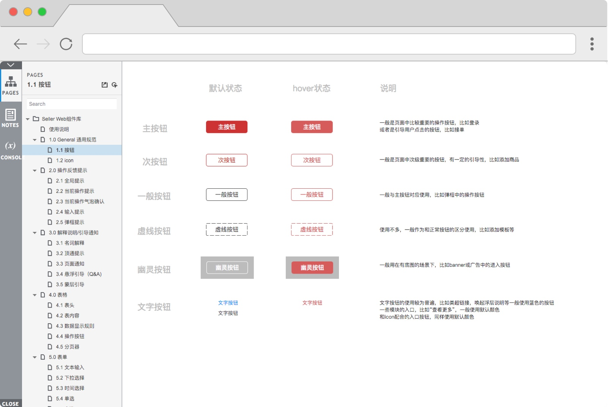
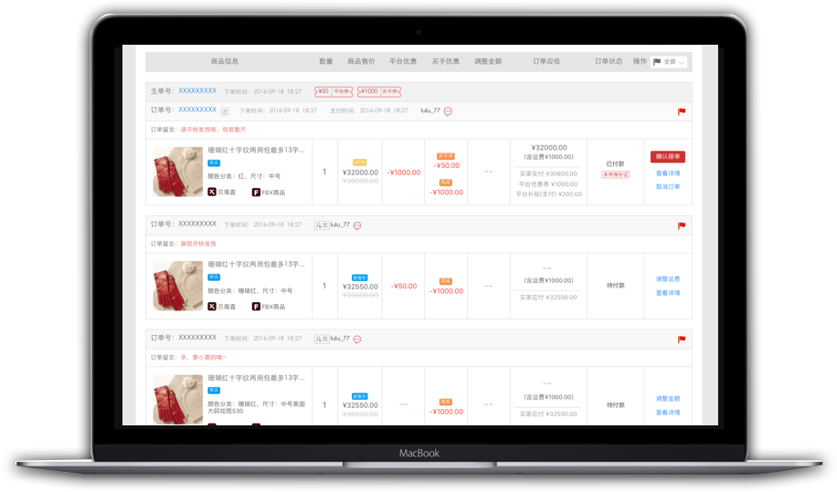
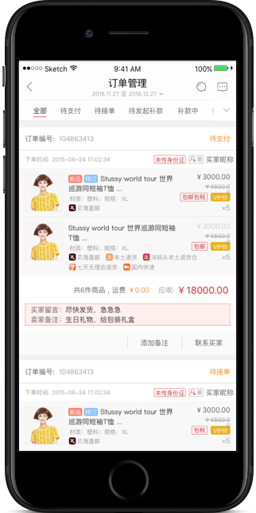

YMT商家操作系统控件库
项目概览
项目时间：2016.08-2017.03
项目简介：相对于买家操作系统来说，商家后台操作系统有着多线程多功能的特点。商家用户很可能要面对大量的表格，表单，数据，以及进行各种复杂的操作和设置。因此，规范页面布局的一致性和页面交互的流畅性和有效性，能有效地减少它们犯错的几率，使得操作能顺利进行。而且，建立一套可参照的设计规范和控件标准，对于提升开发的协同和开发效率也将发挥巨大的作用。 我们以Ant Design为依托，结合YMT商家系统自身的特点，整理了第一版组件库。
设计角色
角色定位：交互设计
负责内容：定义信息层级交互设计高保真原型部分UI设计
项目背景
相对于买家操作系统来说，商家后台操作系统有着多线程多功能的特点。商家用户很可能要面对大量的表格，表单，数据，以及进行各种复杂的操作和设置。2016年我开始负责后台商家后台操作系统的交互设计工作时，发现当时的后台存在术语不统一，相似页面布局不一致，同一行为的交互方式和视觉展示不一致等问题，给商家用户的操作效率和体验感受带来很大的影响。
另外，我们还发现，虽然商家后台涉及的功能和页面繁杂，但很多页面和操作控件存在极大的相似性，如果能将这些重复使用率高的控件和页面进行梳理，一方面，统一布局和交互控件能将降低用户的认知和学习成本；另一方面，可以极大地提高和开发人员的协同及开发效率。
在此情况下，我们团队以Ant Design提供的控件库为基础，结合自身的平拍风格和网站特点，建立了一个控件库，以便统一商家端Web和APP端的交互设计规范，提升团队开发迭代效率。
组件库
Web 可视屏幕区域相对较大，用户使用系统一般使用键盘和鼠标；而移动端的屏幕较小，是靠各种手势及按压产生交互。鉴于web端和移动端的操作平台有各自的特点，交互行为和用户的使用习惯有很大的区别，因此根据各自设备端的特点，创建和整理了两套组件库。
例如，在web端，后台操作系统最常见的页面是做各项管理的列表页，两个设备端管理列表页面布局设计如下所示。
再比如，商家操作会有高概率的操作反馈和消息提示。在旧版本的web和app端多以使用弹框为主。虽然弹框提示能起到非常强的警示作用，但是却阻断了用户的操作流，在很多情况下是影响用户体验的。因此，根据反馈对用户的打扰程度，从轻到重分为三种。
WEB端
当前操作反馈
轻量提示，出现在用户操作行为的当前位置，在及时的对用户做出反馈的同时对整个操作流做最小的干扰。适用于如复制单号，填写表单等不对用户操作进行打扰的场景。
APP端
Web端操作系统组件库
APP端操作系统组件库
应用实例
订单线优化
 
YMT商家后台首页改版

城市公共自行车系统概念设计

1号店海购用户研究